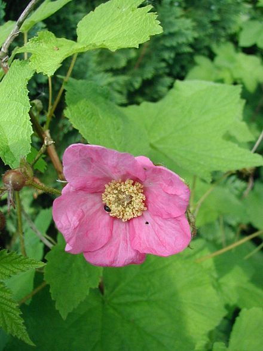

<!--Various Types of Links-->


		<!--ABSOLUTE LINKS - External-->

					<!--Link - Link name can be changed-->
						<a id=top href=https://www.google.com target="_blank"/>Click here to go to google</a><br><br>

					<!--Image with a Link Attached-->	
						<a href=https://www.wikipedia.org/ target="_blank"/></a><br>

					<!--For people to open the link in new tab while they stay on your page; add the target attribute-->

						<a href="https://www.google.com" target="_blank"/>Click here to go to google</a><br><br>


		<!--RELATIVE LINKS - Internal: home, about, contact; make sure to always start internal links with <a href:"./INTERNAL LINK> the full stop and forward slash-->

					<!--Link within our Website - Relative Link example: <a href="./contact.html">Contact</a>-->
						<a href="./index.html" target="_blank">Testing Webpage</a><br>

					<!--Link to my actual webpage - Relative Link-->
						<p><a href="./0-1-aboutme.html" target="_blank">Live Webpage</a></p><br>


		<!--ANCHOR LINKS take you to a specific part of a page you are currently on-->

					<!--Take you to the top by Adding an ID tag to the top section of the page I used the first link above with and id attribute-->
						<p><a href=https://www.wikipedia.org/ target="_blank"/></a></p>

					<!--Take you to the 2nd flower by adding ID tag on the second florwer-->1
						<p><a id=thirdflower href=https://www.wikipedia.org//></a>3rd flower</p>

									<!--Other flower Images to fill the page for the example to make sense-->
										<p><a href=https://www.wikipedia.org//></a></p>
										<p><a href=https://www.wikipedia.org//></a></p>	
										<p><a href=https://www.wikipedia.org//></a></p>	
										<p><a href=https://www.wikipedia.org//></a></p>

					<!--These are links Visitors will be clicking - make sure to connect the ID tags Correctly-->
						<p><a href=#top>back to top</a></p>
						<p><a href=#thirdflower>Go to Third Flower</a></p>


